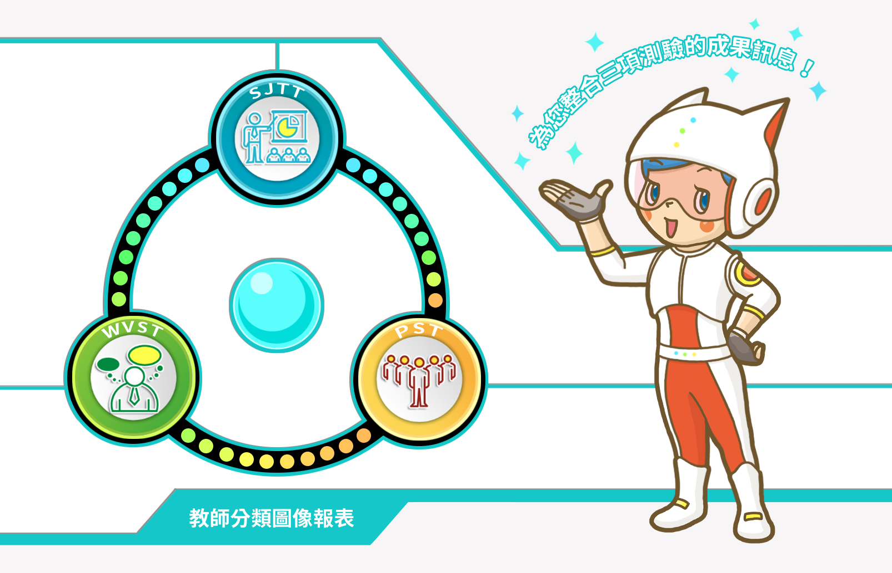

教師分類圖像報表
師資生潛能測驗系統共有教師情境判斷測驗（Situational Judgment Tests for teachers ,SJTT）、教師工作價值觀量表（Work Values Scale for teachers, WVST）、教師人格量表 （Personality Scale for teachers, PST）三大類：SJTT測量內容包含學生當前師培知識、技巧，態度及經驗；WVST能有效解釋學生在教師工作中所看重的事物；PST則能預測學生之情緒、行為等的教師人格特質展現。
本報表使用潛在類別分析（latent class analysis），整合貴校學生在SJTT、WVST、PST之測量結果，進行再次分類、對應至可以有效解釋上述測驗觀察指標組合的教師圖像類組（詳述如下頁），並於報表中呈現全校學生分類至各類組的整體機率值、及個別學生其最大機率的類組落點。建議解讀報表時，需同時參考各類別的機率值將較為合適。本報表將能提供綜合三項測驗結果之整體性觀點，使師資培育單位在進行相關決策如甄選、擇才時，有更全面的參考訊息。

1/7